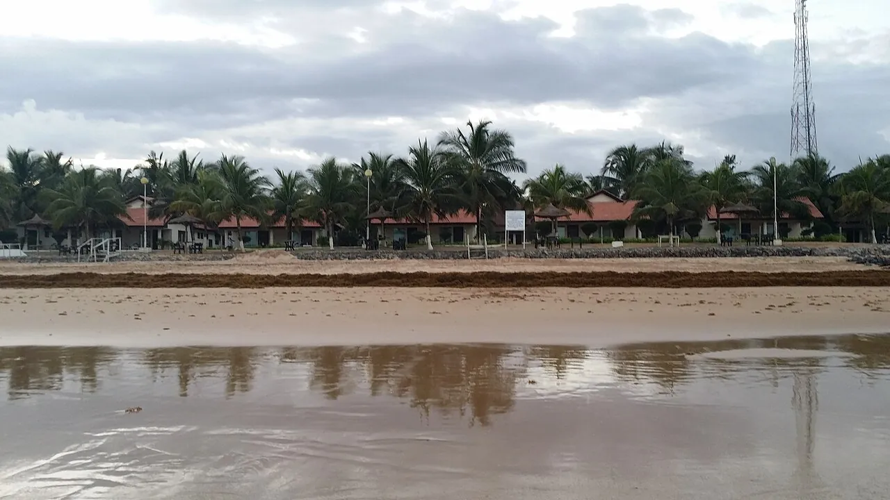

Busua
Western Region, Ghana · surf, baignade

Petite baie tropicale bordée de cocotiers, pionnière du surf au Ghana. Des vagues douces idéales pour apprendre.
- Lieu
- Western Region, Ghana
- Niveau
- Débutant
- Activités
- surf, baignade
- Type d'eau
- Mer / océan
- Coordonnées
- 4.80, -1.94 (position approximative du secteur)
Dangers à connaître
- Courants hors de la baie.
- Chaleur et soleil intenses.
Le conseil d'Ocean Buddy
Loue une planche au village et surfe le matin, avant que le vent ne tourne.
Ouvrir dans Ocean Buddy Télécharger sur l'App Store
Source : Fiche Ocean Buddy · septembre 2026 · à vérifier localement.